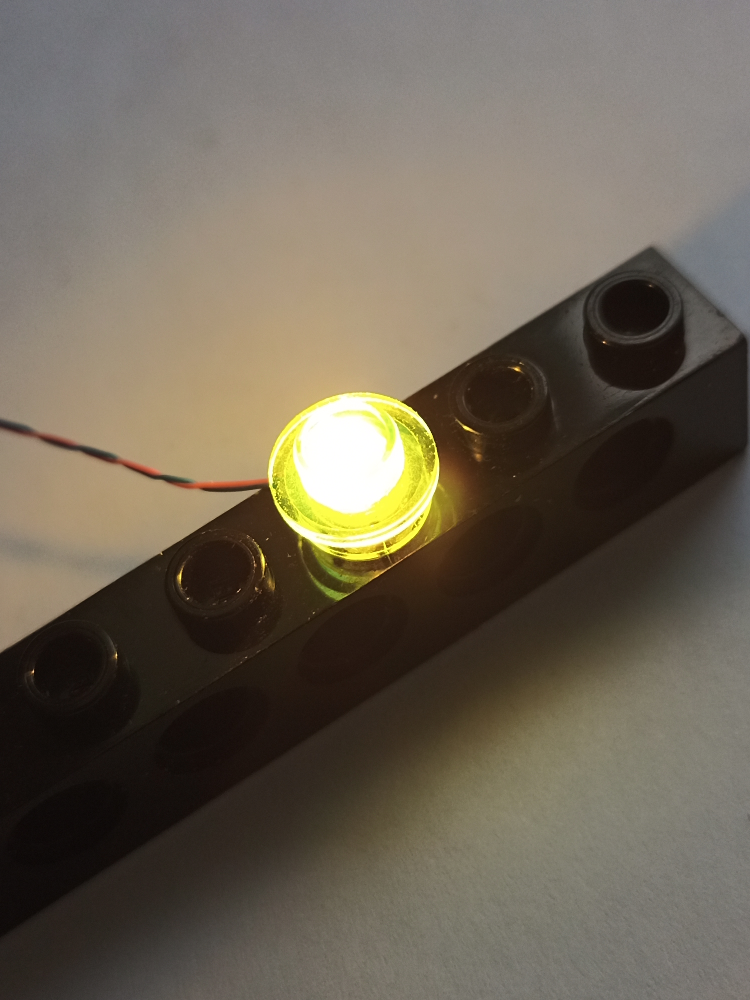

Meine Lego Basteleien
Ich arbeite im Moment daran, Lego Modelle zu beleuchten und zu motorisieren.
Als allererstes mal ein ganz kleines Licht:
Ich benutze SMD-LEDs Typ
0603.
Die sind winzig, aber sie lassen sich gut unter die Lego Plättchen klemmen.
 Das
ist ganz schön fummelig.
Das
ist ganz schön fummelig.
Eigentlich sollen die mit Vorwiderstand an 5V betrieben werden.
Ich hab das aber ohne Widerstand an 3,3V probiert (auch mehrere parallel geschaltet).
Bei mir klappt das (ohne Gewähr!).
In den nächsten Tagen zeige ich dann auch, wie das Ganze ferngesteuert wird unter Benutzung von iotempower.